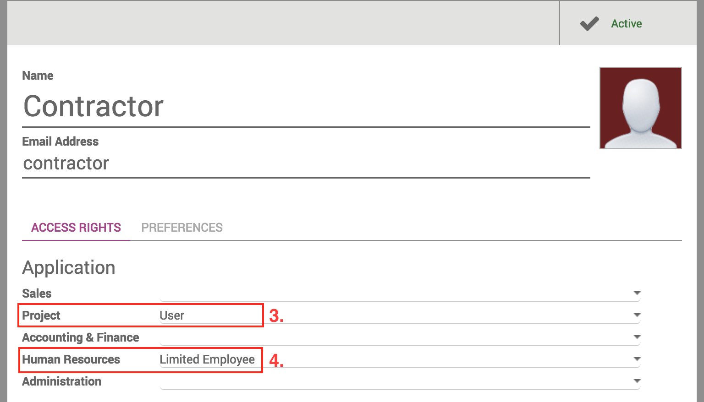
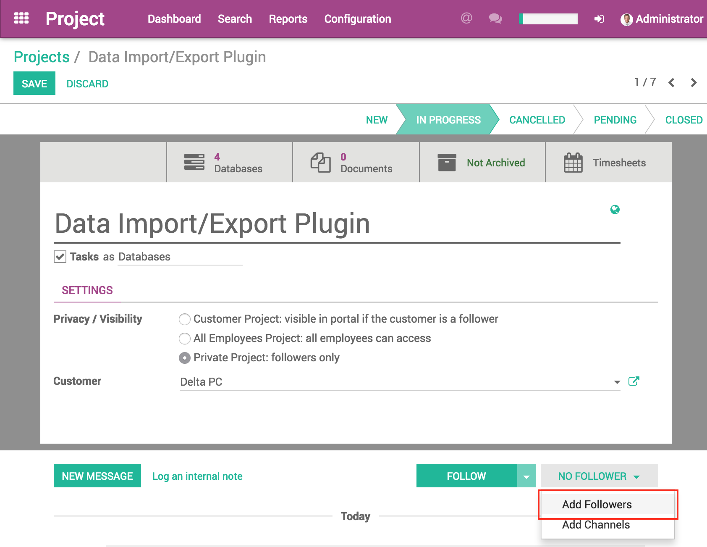

HR - Contractor
Limit the visibility of Project and Tasks

This module allows you to limit the access of the project and tasks for contractors or other external entities.
You can decide which projects and tasks are visible to these restricted users. This way you can make sure contractors cannot see all your customers or projects if you don't want them to.
Further you can set the list of Partners, Employees, Analytic Accounts, Projects and Tasks and decide which ones are available to these restricted employees.
Contractors are allowed to log time on the chosen projects and tasks.

User Guide
How to create a Restricted Access User

- As Administrator, go to Settings > Users
- Create a new user
- In the Application section, set the Project right to User
- In the Application section, set the Human Resource right to Limited Employee
- Create a new Employee linked to your newly created user.
How to grant access to a project for a Restricted User
- Logged in as the project manager, go to the project settings
- In the chatter box, click on the Follower button
- Add the restricted user as follower
